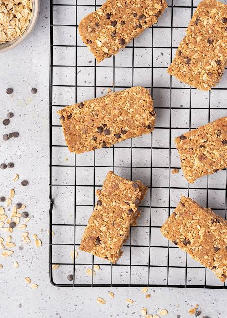

Protein Bars

Description
Healthy bars made with muesli, oats, nuts and dried fruits.
Ingredients
- muesli
- oats
- nuts
- dried fruits
Steps
- Take peanuts and roasted gram dal in a blender and crush them into a coarse mixture.
Set them aside.
- Take jaggery in a heavy bottom kadai.
Add some water and mix well. Let them dissolve and come up to a boil.
Let it boil for 5 mins.
- Now add in all the ingredients and coconut oil and mix well.
- Keep stirring so that it gets thick and leaves the sides of the kadai.
It will take around 15 mins.
- Now grease a plate with oil.
Transfer this mixture onto the plate and flatten it well.
You could use a greased plastic sheet for this.
- Let it cool down for 30 mins or so.
- Now slice them into bars.
- Let them cool down completely. Store them in air tight container.
Return to Main Page